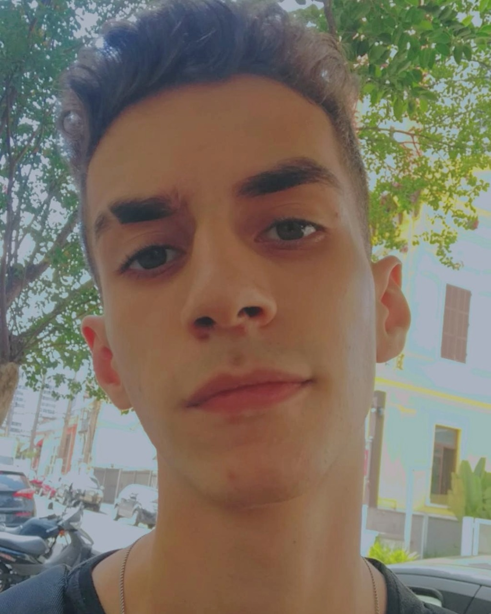

A Origem

-"Olá visitante! Meu nome é Jorge Uliam de Lima, tenho 19 anos e sou de São Paulo.
Descobri os games muito cedo. Tive meu primeiro contato com 6 anos, quando ganhei o playstation 1 do meu
primo!
Depois tive um playstation 2 e bem depois um computador, onde uso até hoje! Sempre gostei de jogar pois era
uma bolha
de paz para mim, e eu gostava de desafios e evolução para passar nas fases!"

PlayStation1

PlayStation2
A Descoberta
"O computador foi o que eu mais usei. Desde 2009 até hoje, pois é onde
eu encontro tudo que eu gosto, curiosamente descobri também o ramo que quero trabalhar e viver dele,
Analista e desenvolvedor
de
sistemas! Esse site tem um jogo específico como tema, o Counter Strike: Global Offensive, jogo que
eu conheci em 2015.
Esse jogo me atraiu muito por causa do seu lado competitivo. Essa época havia muitos campeonatos de cs
(counter strike) e eles me inspiravam muito. Queria ser o melhor, queria competir, queria me desafiar todo
dia a melhorar no jogo!"

Meu atual computador! <3

Esse é o olofmeister, jogador profissional de cs, o melhor jogador de 2015, a
minha primeira inspiração! (clique na imagem)
O Aprendizado
"Desde 2015 até hoje, joguei e joguei cs. Gostava de treinar e ver o resultado, e de querer
sempre mais e mais! Durante esses anos teve vários outros jogadores que me inspiraram, como o coldzera (que
tem o video dele na home da minha página!), fallen, fer, TACO, fnx, entre outros. Me faziam querer evoluir
ainda mais.Anos depois,tive a oportunidade de ser jogador profissional de cs, mas não tive
apoio de familiares. Foi uma época triste, pois queria muito viver disso, eu queria trabalhar com algo que
gosto, que me dedico, que busco sempre melhorar. Hoje, ja superado e com outros focos e objetivos, não
consigo ter o mesmo empenho que tinha antes com o
jogo, muito pelo fato que com a idade, outras responsabilidades acabam aparecendo, mas, quando posso, sempre
estou jogando! É atualmente meu hobby, onde posso estravazar do estresse e tristezas do dia a dia. Aprendi
muito com o counter-strike. Aprendi que o esforço dá resultado, que ter rotina é essencial para a evolução,
que eu posso chegar lá, e que ser bom nas coisas que faço me faz feliz! Uso todo esse aprendizado hoje no
meu novo objetivo, quero ser analista e desenvolvedor de sistemas e estou me identificando muito com o meu
hobby, porque nesse ramo da tecnologia eu busco sempre melhorar e melhorar para me tonrar bom no que quero
fazer! Esse site faz parte dessa trajetória! Nele eu uso tudo que aprendi no Counter-strike para vocês
melhorarem. Espero que vocês no outro lado da tela se sintam inspirados a irem atras do seus sonhos através
dessas ideias! Sempre busque melhorar nas coisas que você faz, seja 0,01% melhor a cada dia que passa que eu
prometo que valerá a pena! As coisas não caem do céu, corra atrás."
"Eu pertenço ao melhor" -Olofmeister